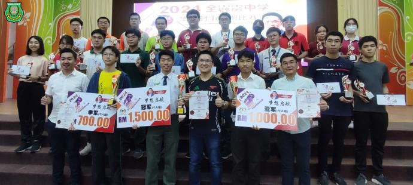
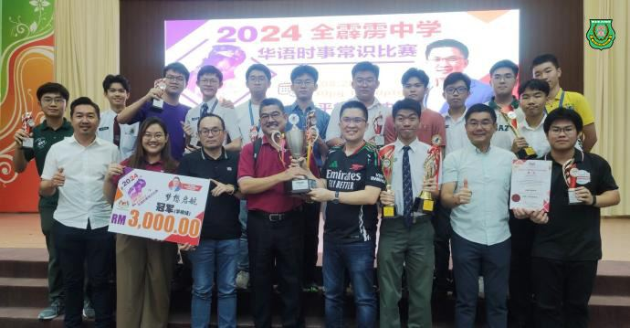

全霹雳中学华语时事常识比赛
全霹雳中学华语时事常识比赛
学生赵升脱颖而出获优秀
南华独中高一理科学生赵升在近日举行的"2024年全霹雳中学华语时事常识比赛"中荣获优秀奖，。这项比赛吸引了来自全霹雳州24所中学的292名学生参加，竞争激烈。
校长陈丽冰博士对赵升同学的出色表现表示祝贺，并以“家事国事天下事，事事关心”勉励赵升同学的成绩，更呼吁其他学生向赵升看齐，不但关注课本知识，更应该时刻关注时事，培养批判性思维能力。"
华文组主任廖丽华老师表示，校方鼓励学生多阅读报章杂志，关注时事新闻。这不仅能提高他们的华文水平，也能拓宽他们的视野，培养他们的社会责任感。

